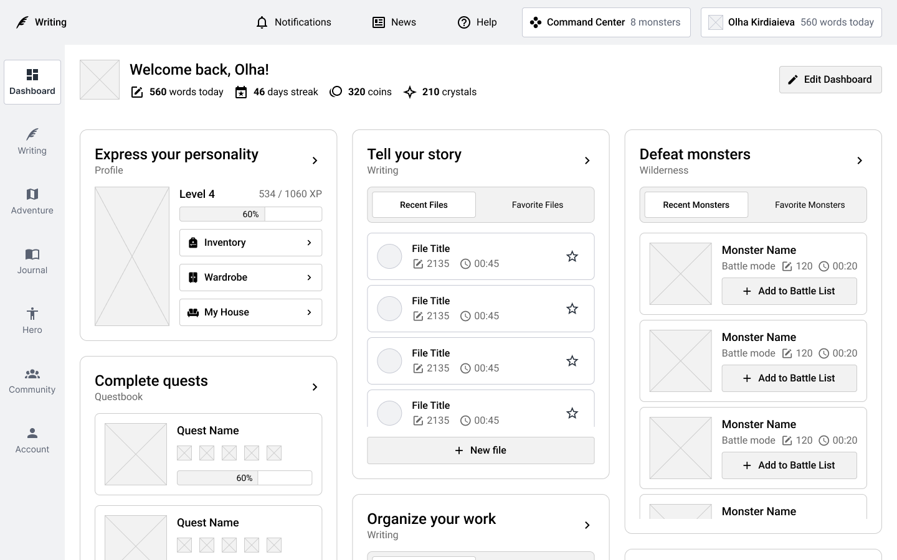
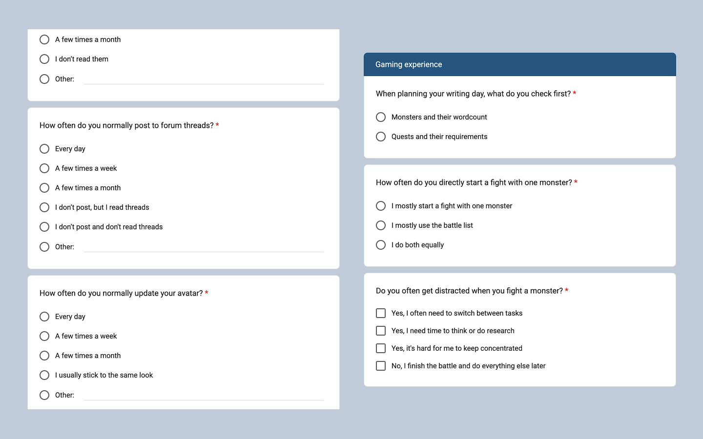
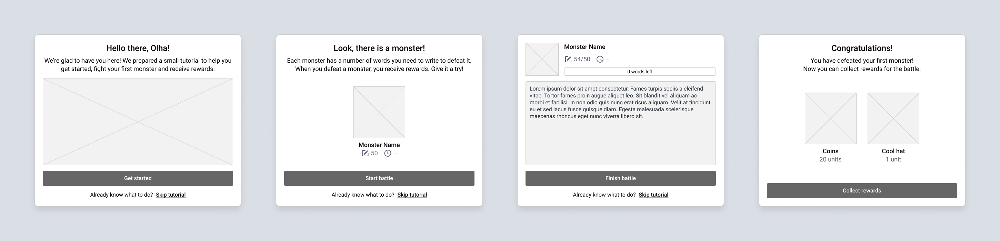
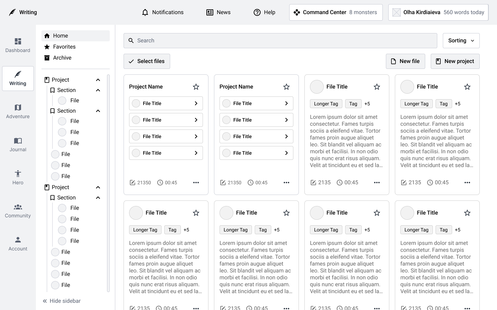
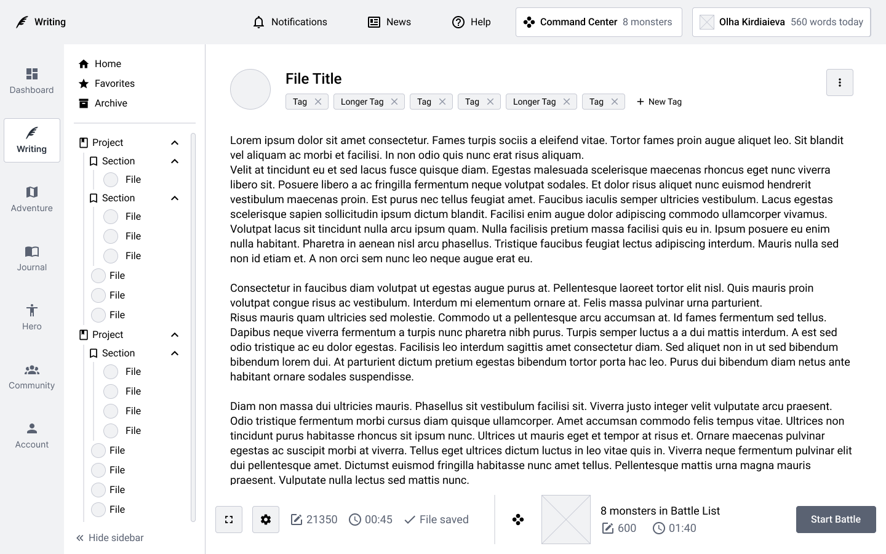
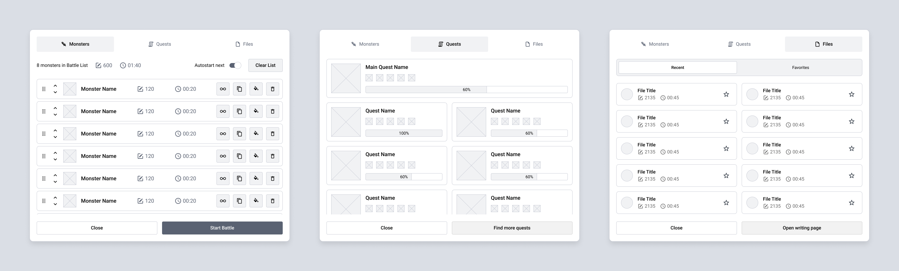

Research-based redesign rated 9/10 by the writing community
Improving the UX of a productivity and gamification tool, validated directly with the users.

Context
Fighting monsters and the writer's block
This project was a redesign of a web-based writing game that helps users find motivation to write daily. The client had a team of great storytellers and illustrators, but they needed external help to improve the usability of their platform. The platform had a large community, so the project was designed in close collaboration with users.
Process
Community-backed research
The client was passionate about the project and willing to conduct comprehensive research. We discussed and approved the research plan during a stakeholder interview. I started by investigating the current system and the information architecture. Then I conducted competitor research to see how competitors solved similar problems.
Next, I moved to the user research, which included 5 interviews and 2 surveys. The platform had a loyal community of writers, so with the client's input I was able to quickly find willing research participants.
The first survey was focused on learning about the audience, their habits and motivations. The second one covered the usage of the platform itself. An interesting finding was that writers, unsurprisingly, really like to use the "Other" option in surveys, which led to a longer processing time of the responses. In the second survey, I cut the open-ended options in multiple choice questions to keep the data quantitative.

Finally, I reviewed the analytics, paying the most attention to the user pathways. This allowed me to check the self-reported data from the interviews and surveys to refine the user flow.
After completing the research stage, I analyzed the findings and defined several priority issues for the redesign. Then, I started building the updated prototype module by module. Every part of the process was discussed with the client and updated according to the feedback. For the priority modules, I also conducted unmoderated user testing with the interactive UX prototypes in Figma and gathered feedback from the users in a qualitative survey.
Solution
Improving retention through onboarding
One of the main business goals for the client was to improve retention. New users didn’t know where to start and what to do. To improve the situation, I suggested adding interactive onboarding for new users. The main idea was to engage them in a short battle with a monster and give rewards for it. This would show the basics of the game and give users a feeling of accomplishment, making them more likely to stay.

Helping users navigate the system
Another product issue was the lack of a starting page. Previously, the users always landed on the writing page after logging in. However, the quantitative data from surveys and analytics showed that users typically don’t start writing immediately. They usually check their quests, select monsters to battle, and only then get to writing. To support this behavior, I added a customizable dashboard featuring stats and links to other pages.
Decreasing usage of competitor software
Based on the surveys and user interviews, many users typed their text into another software and copy-pasted it into the system to receive rewards for the battle. One of the reasons for this behavior was the poor usability of the writing page.
Previously, the system had two separate pages for files and projects. However, during the user research, I discovered that users mostly had just one or two projects for their files. Based on that knowledge, I decided to combine the two pages. I used patterns from competitor research to build a layout that would allow users to organize and navigate their files better.


Bringing core features together
One of the client’s concerns was that the system was very fragmented. Gaming and writing existed separately, so users had to switch between different pages to complete tasks. That’s why I decided to add a hub for quick access to core product features.
This change was included in a user testing scenario and received a warm welcome from the audience. It helped tie the product together and simplify the primary user flows.

As a result, even conservative users appreciated the new command center and shared their opinions on the community forum:
I actually really like the redesign now. It took me a while to settle my frustration over some things ... but the quick menu on the top right is such a good trade off and has saved me a ton of time now ... Suddenly I'm finishing quests again.
Outcome
Passed the test of time
The redesign was successfully launched and refined with the community. The writing page structure and the command center are still present in the product with almost no layout changes. The dashboard was simplified but still remains as a place to start the adventure.
The results so far have been fantastic! We shared a preview of our work with our community and even drastic changes got ratings of 9/10 and higher.